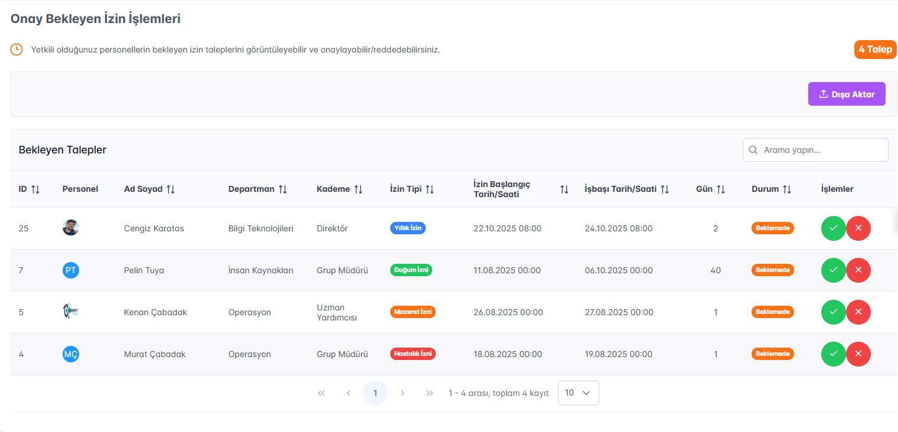

İnsan Kaynaklarınızı
Geleceğe Taşıyın
Dijital dönüşümle İK süreçlerinizi hızlandırın,
maliyetlerinizi azaltın, verimliliğinizi artırın
Enterprise İK Yönetim Platformu
LionSoft Technology tarafından geliştirilmiştir
Personel ve İzin İşlemlerinde
Tam Otomasyon

Personel Yönetimi
- İzinli personellerin takvimde görünmesi
- Ay-Yıl ve Departman bazında filtreleme
- Personel izin detay görüntüleme
- Daha efektif izin planlamaları
Personel işlemleri 10 dakikaya iner

İzin Yönetimi
- Otomatik izin hakkı hesaplama
- Çok seviyeli onay süreçleri
- Takvim görünümü ve çakışma kontrolü
- Anlık bildirimler ve hatırlatmalar
Onay süresi 5 günden 1 saate
Finansal İşlemlerde
Hata Payı Sıfır
Bordro Yönetimi

- Otomatik SGK ve vergi hesaplama
- Toplu bordro hazırlama
- E-bordro gönderimi
- Avans kesinti entegrasyonu
%75 daha hızlı
Avans Yönetimi
- Online avans talebi
- Otomatik limit kontrolü
- Taksit planı oluşturma
- Bordroya otomatik yansıma
Anında onay
Masraf Yönetimi
- Mobil fiş yükleme
- Kategori bazlı takip
- Hızlı onay süreci
- Otomatik raporlama
Şeffaf süreç